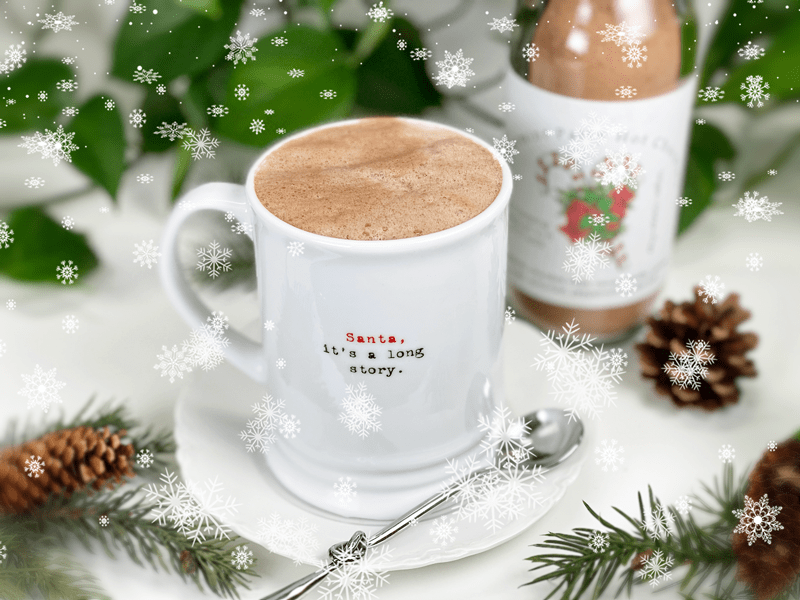
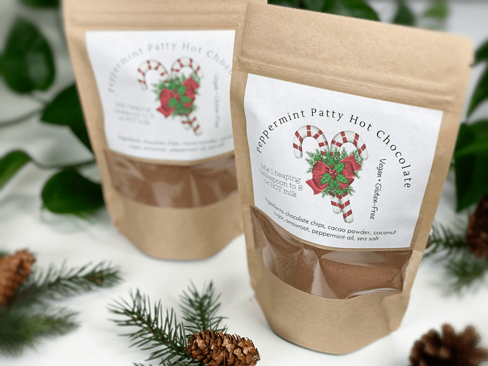
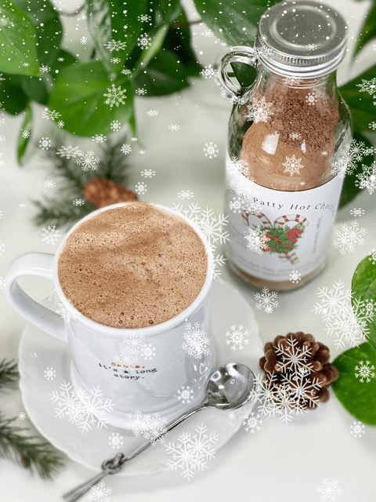
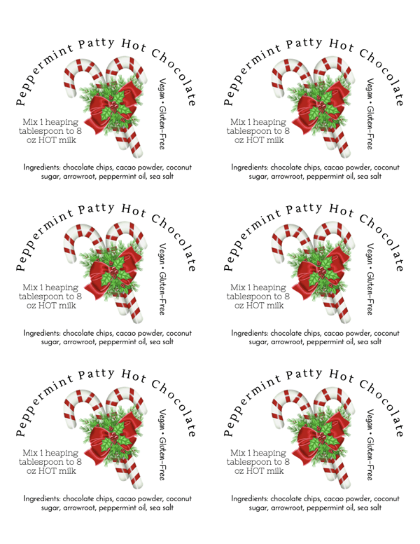

Peppermint Patty Hot Chocolate Mix | Printable Labels Provided
Peppermint Patty Hot Chocolate is a sure way to brighten the holidays. What’s not to love about a hot chocolate during the winter season? It’s creamy, chocolatey, pepperminty, and oh so warm! It’s vegan, preservative-free, easy to make, and is excellent as a gift or just to have on hand for when those chills sit deep within your bones.

If you’re anything like me, no matter how hard you try to be organized, there always seem to be a few people that you would like to show some appreciation for at Christmastime that you just didn’t remember…until now! Throughout the holiday season, I am always busy creating homemade edible and artsy gifts. I have my list of those that I want to give them to, but I always make extra for those last-minute gifts.
Hot chocolate mixes go together quickly and can be packaged in so many different vessels: bags, jars, you name it! Be creative with what you have on hand. If you like the labels that I made, I have attached a PDF so you can print them out. When I printed my labels, I used removable sticker paper so the next person can easily remove the sticker and use the jar or bag for its next purpose. Here is the PDF — peppermint patty hot chocolate mix.
Creating the Perfect Mug of Hot Chocolate
- Upon serving, add a pinch of salt per each mug to bring out the flavor of the chocolate. It truly wakes up the chocolate and makes the whole thing at least 37% more delicious, I promise.
- For the ultimate creamy experience, use a higher-fat plant-based milk such as cashew or coconut milk.
- To create a frothy hot chocolate, blend and heat it in the Vitamix, Blendtec, or any other high-powered blender. That is exactly what I did, and it shows in the photos.

The What and Why
- Raw Cacao Powder: It puts the chocolate in the hot chocolate!!
- Coconut Sugar: Since this recipe is for a dry hot chocolate mix, you will want to use any sugar that is in powder form. I used coconut sugar, but another good option would be maple syrup powder, which has a wonderfully complex flavor.
- Arrowroot Powder: Arrowroot helps to create a creamy hot chocolate. You can omit it if you wish.
- Chocolate Chips: Because we NEED more chocolate and they add a creaminess to the drink.
- Peppermint: I used peppermint essential oils in my hot chocolate batch. Alternatively, you can use peppermint extract.
This hot chocolate was amazing! It had just the right amount of mint and chocolate, and it really put me in the holiday spirit! I hope you give it a try and get the same effects. blessings, amie sue

Yields 2.5 cups hot chocolate mix
- Combine all the ingredients into a food processor, fitted with the “S” blade, and process until fine and powdery.
- Store the mix in an airtight container at room temperature for several months. Like any homemade food, the older it gets, the more the chocolate taste fades.
For Serving:
- In a saucepan over medium heat, heat one cup of plant-based milk (coconut, almond, cashew, oat, etc.) until steamy.
- Add 1 heaping tablespoon of hot cocoa mix. If you like it stronger, add more.
- Whisk over the heat for a couple of minutes, until it begins to simmer and mix is completely dissolved.
- Pour into your favorite mug, top with mini-marshmallows, or a dollop of your favorite whipped cream. Enjoy.
Sample of the Labels I Created

If you like the labels that I made, I will attach a PDF so you can print them out. When I printed my labels, I used removable sticker paper so the next person can easily remove the sticker from the bag or jar and use it for its next purpose. Here is the PDF — peppermint patty hot chocolate mix.
© AmieSue.com